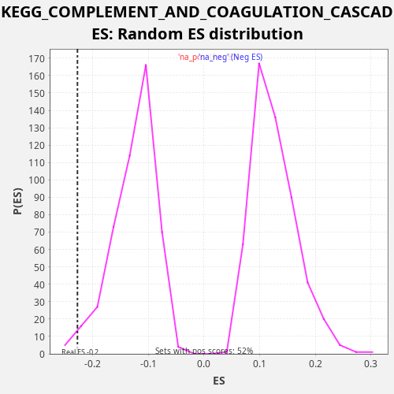

Profile of the Running ES Score & Positions of GeneSet Members on the Rank Ordered List
The same image in compressed SVG format
| Dataset | CCLE |
| Phenotype | NoPhenotypeAvailable |
| Upregulated in class | na_neg |
| GeneSet | KEGG_COMPLEMENT_AND_COAGULATION_CASCADES |
| Enrichment Score (ES) | -0.2271649 |
| Normalized Enrichment Score (NES) | -1.8082306 |
| Nominal p-value | 0.014736842 |
| FDR q-value | 0.070756085 |
| FWER p-Value | 0.72 |
| SYMBOL | RANK IN GENE LIST | RANK METRIC SCORE | RUNNING ES | CORE ENRICHMENT | |
|---|---|---|---|---|---|
| 1 | C4BPB | 30 | 10.622 | 0.0213 | No |
| 2 | SERPINE1 | 151 | 1.312 | 0.0383 | No |
| 3 | C3AR1 | 713 | 0.056 | 0.0345 | No |
| 4 | F3 | 886 | 0.037 | 0.0490 | No |
| 5 | TFPI | 1996 | 0.007 | 0.0191 | No |
| 6 | CFI | 2074 | 0.006 | 0.0382 | No |
| 7 | CD55 | 2580 | 0.004 | 0.0370 | No |
| 8 | PROS1 | 3704 | 0.002 | 0.0064 | No |
| 9 | CFD | 4780 | 0.001 | -0.0218 | No |
| 10 | C8G | 4790 | 0.001 | 0.0005 | No |
| 11 | SERPING1 | 5244 | 0.000 | 0.0017 | No |
| 12 | CD46 | 5322 | 0.000 | 0.0208 | No |
| 13 | CR2 | 5371 | 0.000 | 0.0412 | No |
| 14 | BDKRB1 | 7711 | 0.000 | -0.0470 | No |
| 15 | SERPINF2 | 9548 | -0.000 | -0.1114 | No |
| 16 | F8 | 9673 | -0.000 | -0.0945 | No |
| 17 | FGA | 11069 | -0.000 | -0.1380 | No |
| 18 | MASP2 | 11824 | -0.000 | -0.1510 | No |
| 19 | C5 | 12275 | -0.000 | -0.1496 | No |
| 20 | F10 | 13518 | -0.001 | -0.1858 | No |
| 21 | C4A | 14340 | -0.001 | -0.2020 | No |
| 22 | C1R | 14383 | -0.001 | -0.1813 | No |
| 23 | C5AR1 | 15305 | -0.003 | -0.2023 | No |
| 24 | C4B | 15491 | -0.003 | -0.1883 | No |
| 25 | PROC | 15585 | -0.003 | -0.1700 | No |
| 26 | CD59 | 16243 | -0.005 | -0.1784 | No |
| 27 | PLAUR | 17271 | -0.012 | -0.2044 | Yes |
| 28 | VWF | 17458 | -0.014 | -0.1905 | Yes |
| 29 | BDKRB2 | 17532 | -0.015 | -0.1713 | Yes |
| 30 | PLAU | 17882 | -0.020 | -0.1651 | Yes |
| 31 | C1S | 17960 | -0.022 | -0.1460 | Yes |
| 32 | CFB | 18114 | -0.025 | -0.1306 | Yes |
| 33 | PLAT | 18121 | -0.025 | -0.1081 | Yes |
| 34 | C3 | 18248 | -0.028 | -0.0914 | Yes |
| 35 | F5 | 18377 | -0.032 | -0.0747 | Yes |
| 36 | A2M | 18524 | -0.038 | -0.0589 | Yes |
| 37 | F12 | 18810 | -0.052 | -0.0497 | Yes |
| 38 | FGG | 19401 | -0.116 | -0.0550 | Yes |
| 39 | F2R | 20037 | -0.424 | -0.0624 | Yes |
| 40 | C2 | 20151 | -0.592 | -0.0450 | Yes |
| 41 | CFH | 20218 | -0.707 | -0.0254 | Yes |
| 42 | SERPIND1 | 20332 | -0.978 | -0.0080 | Yes |
| 43 | THBD | 20781 | -5.084 | -0.0066 | Yes |
| 44 | SERPINA1 | 21083 | -26.440 | 0.0019 | Yes |

{kind=link}
{kind=link}